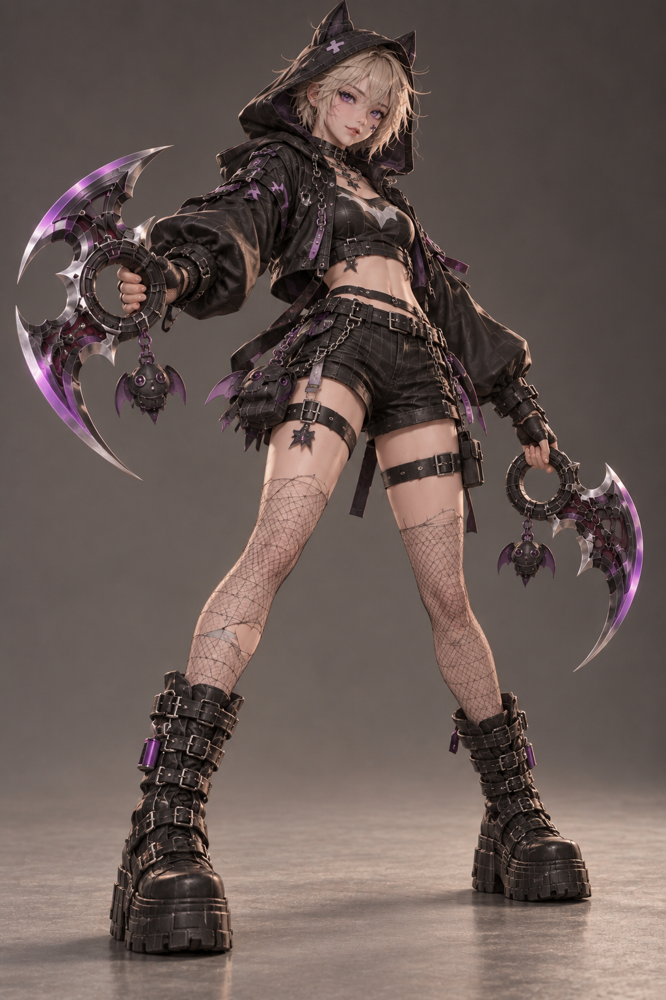
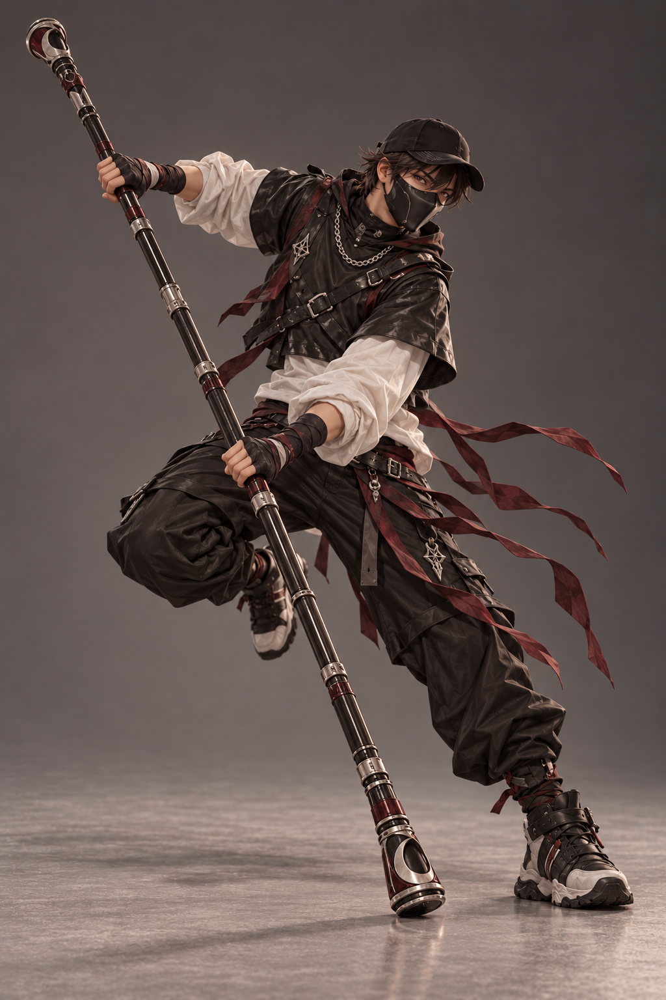
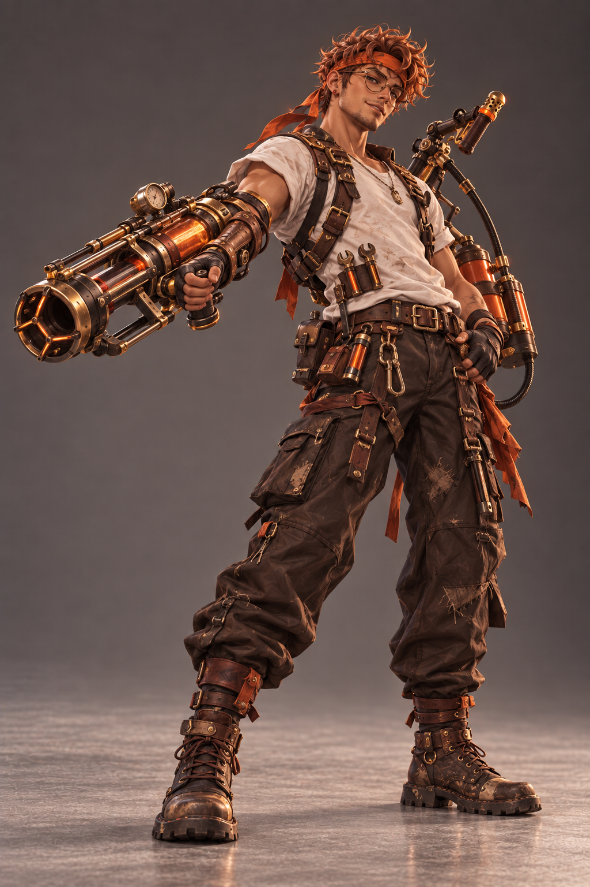
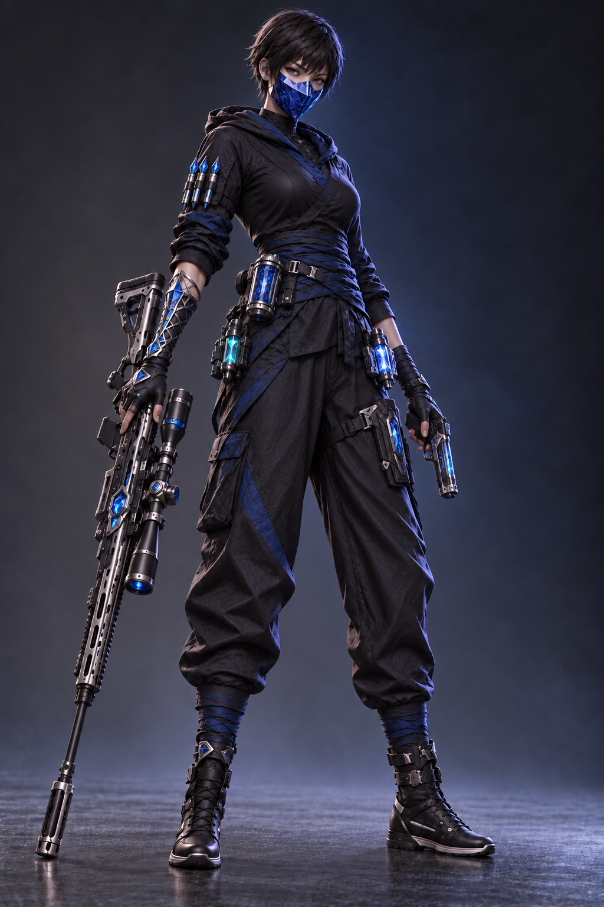

Target 16 heroes; 12 polished heroes is the fallback
Skins
Each hero's skins reuse that hero's skeleton and animation set
Match Structure
Teams
4 players per team.
Lanes
Three main routes functioning like major highways through the map.
Between Lanes
Buildings, tunnels, alleys, rooftops, courtyards, bridges, and shortcuts. No required jungle role.
Working rule: lanes provide reliable pressure; side districts provide rotation, positioning, objectives, and surprise routes.
Characters
Hero 01
Silky
Supportive damage · mobile support skirmisher · close range

Visual reference. Final character model and costume design TBD.
Theme
Y2K / emo / scene-inspired bat rogue
Personality
Cute, bubbly, quirky, deceptive, playful
Hair
Blonde, short asymmetrical cut
Outfit
Baggy black weather-resistant hoodie, shorts, tall boots
Weapon
Dual oversized handheld glaives
Dart storage
Visible poison and healing dart holders on tall boots
Movement
Airy, smoky, fast, light; dark bat-wing VFX during ally movement ability
Rig
Hero-specific rig and animation set; skins reuse Silky's rig and animations
PRIMARYGlaive Slash
Fast close-range glaive attacks.
SECONDARYGhost Lunge
Throw a chained glaive that anchors to enemies or terrain. Silky can pull herself toward the anchor point, or press Secondary again to recall the glaive.
Recalling a glaive attached to an enemy pulls that enemy toward Silky instead. Has a cooldown.
ABILITY 1Wingrush (working name)
Silky manifests breezy dark bat wings and glides toward a targeted ally at a controlled speed.
She becomes briefly invulnerable at the start of the movement. As the wing gust reaches the ally a moment later,
that ally gains a brief invulnerability window. After Silky's invulnerability ends, she retains a temporary shield added on top of her HP and slight damage reduction.
Intended as a medium-cooldown teamfight rescue and repositioning tool.
ABILITY 2Dart
Choose poison or healing per cast. Dart detonates on impact and applies AoE splash damage or healing.
ULTIMATEProtective Smoke Burst
Supportive AoE smoke burst intended to protect allies briefly and counter dangerous enemy moments.
PASSIVETBD
No passive locked yet.
Hero 02
Agario
Mobile damage and disruption · staff fighter · close to mid range

Working visual concept. Staff, costume details, and final model may evolve during production.
Theme
Masked streetwear fighter whose staff turns momentum into attacks and misdirection
Look
Black baseball cap and stylish face mask with expressive eyes; silver chain necklace and hand wraps
Outfit
Baggy white long sleeves under a cropped black vinyl short-sleeve layer with crossing straps; loose dark pants
Weapon
Single telescoping staff with weighted ends and subtle crescent details; extends for thrusts, sweeps, vaults, and pivots
Movement
Plants the staff to vault and change direction; chases through well-timed movement rather than hooks or pulls
Clones
Brief visible echoes replay recorded staff movements; they do not roam or act independently
Rig
Hero-specific rig and animation set; skins reuse Agario's rig and animations
PRIMARYStaff Strikes
Quick close-range staff combo. The final hit extends the staff into a longer poke.
SECONDARYPivot Sweep (working name)
A broad staff sweep that briefly displaces nearby enemies. Its direction follows Agario's movement,
letting him clear a path or create an opening without pulling targets.
ABILITY 1Long Step (working name)
Extend the staff for a narrow, long-range thrust. Reactivate shortly afterward to plant it and vault toward the point of impact.
Provides poke and a committed chase route.
ABILITY 2Echo Step (working name)
Dash in a chosen direction and leave one visible clone at the starting point. After a short delay,
it replays Agario's staff sweep from that movement, dealing reduced damage and briefly slowing enemies it hits.
The replay is telegraphed so opponents can move away.
ULTIMATEEncore (working name)
Record the next two staff moves while Agario travels. Two clones appear along his route and replay those moves in sequence,
dealing reduced damage and briefly shoving enemies. His chosen path sets up the area of control.
PASSIVETBD
No passive locked yet. Balance and timing of the clone replays remain subject to playtesting.
Hero 03
Solistice
Mobile damage and utility · steampunk engineer · charged explosive shots and close-range fire

Selected visual reference: first Solistice concept. Final model and gameplay tuning remain in development.
Theme
Steampunk tinkerer / engineer with a scruffy, confident bad-boy look
Face & hair
Medium tan skin, light stubble, curly sandy copper-red hair with fiery highlights
Accessories
Orange headband, glasses, small red stud earrings, work gloves and practical tools
Outfit
Plain white T-shirt, dark brown cargo pants, rugged boots, loaded utility belt and tool harness
Main weapon
Large but lightweight cannon braced along the forearm. A control grip and arm supports stabilize its open mechanical frame;
copper piping and a visible charge chamber emphasize its engineered construction.
Ultimate weapon
Separate flamethrower carried on the back harness with fuel canisters and a hose, drawn for the ultimate
Combat
Deliberate charged precision shots with small explosive splash, followed by aggressive close-range fire when opponents close in
Movement
Mobile weapon handling; a proposed pressure-vent boost supports repositioning
Rig
Hero-specific rig and animations for the braced cannon and separate flamethrower; skins reuse his rig and animation set
PRIMARYCharged Cannon (working name)
Charge a heavy explosive round before firing. A precise direct hit carries most of the impact, with a small AoE splash around it.
The intended pacing resembles a powerful charged sniper shot. Chamber glow and a rising whine communicate the charge; exact charge time, damage and splash radius are TBD.
SECONDARYTBD
Alternate aiming or weapon handling is not finalized.
ABILITY 1Pressure Vent (proposed)
Vent built-up heat behind him to boost forward, singeing enemies close to the exhaust. Intended as a movement and repositioning tool. Heat requirements and cooldown are TBD.
ABILITY 2Spark Canister (proposed)
Toss a small device that bursts when an enemy steps on it or detonate it manually. Creates a planned explosive setup near cover or a route teammates are contesting.
Trigger rules, duration and damage are TBD.
ULTIMATEFirestorm (working name)
Draw the separate flamethrower from his back and spray an intense, sweeping cone of fire across nearby enemies while advancing.
The intended effect is a dramatic close-range AoE fire blast. Duration, startup and turning limits remain subject to playtesting.
PASSIVETBD
No passive locked yet.
Hero 04
Mar
Marceline · crystal fighter · pistol / sniper stances · damage and team support

Current crystal fighter reference: dual weapons, scanner darts, field emitters, crystal bracer and shared ultimate reservoir.
Name
Marceline; Mar is her nickname and roster name
Theme
Sharp, elegant, shadowy crystal fighter; serious and composed
Appearance
Angular facial features, short dark brown pixie cut, faceted blue crystal mask across the lower face
Outfit
Charcoal and midnight-blue clothing, hood lowered onto her shoulders, cloth waist and forearm wraps, baggy trousers and sleek boots; no cape
Weapons
Lightweight fast sniper capable of healing or damage, plus a compact pistol for close-range fighting
Utilities
Upper-arm scanner darts, hip-mounted field emitters, crystal forearm bracer and one shared ultimate crystal reservoir
Playstyle
Cyclical weapon switching changes both abilities and the ultimate.
Pistol supports pressure and pushes; sniper supports precision, information, healing and recovery.
Rig
Hero-specific animations for both weapons and their transitions; skins reuse her rig and animation set
WEAPON CYCLEPistol / Sniper
Manually switch between two distinct combat stances.
The equipped weapon determines Ability 1, Ability 2 and the available ultimate.
Switching does not reset the shared ultimate cooldown.
Weapon-switch binding and ordinary ability cooldown rules are TBD.
PRIMARY / SECONDARYDual Weapons
Pistol: quick close-range shots. Sniper: fast precision shots with healing and damage capability.
Scope controls, healing/damage selection and ammunition rules remain TBD.
PISTOL · ABILITY 1Crystal Shot
Fire a crystal skillshot that briefly encases an enemy in crystal, freezing them for approximately one second.
Exact duration and cooldown require tuning.
PISTOL · ABILITY 2Movement Field
Create a field that briefly grants movement speed and a damage boost to Mar and teammates inside. Intended to support an aggressive team push.
SNIPER · ABILITY 1Scanner Dart
Fire a dart that temporarily reveals enemies in an area. Detection radius, duration and pulse behavior are TBD.
SNIPER · ABILITY 2Healing Field
Create a field that restores health over time to Mar and teammates inside. This is sustained area healing, not an impact burst.
PISTOL · ULTIMATECrystal Rain
Crystal shards rain over an area, repeatedly damaging enemies inside. Crossing the boundary in either direction briefly crystallizes and freezes enemies,
like Crystal Shot. A clearly visible perimeter communicates the hazard. Duration, radius and repeated boundary-trigger rules remain TBD.
SNIPER · ULTIMATEResurrection Field
Activate instantly near fallen teammates to begin resurrecting every eligible ally whose death location lies inside the AoE, with no target cap.
Activation is instant, but the resurrection itself takes time. Mar must reach the relevant area; this is not a remote scoped revive.
Enemies can kill Mar during the resurrection delay. Once triggered, the resurrection continues even if she dies.
Eligibility is limited to allies still awaiting respawn; exact delay, revived health and radius are TBD.
SHARED ULTIMATE RULEOne Long Cooldown
Crystal Rain and Resurrection Field share one cooldown, intended to be much longer than most other heroes' ultimates.
Using either spends both options until the cooldown ends. Mar must weigh offensive pressure against recovering one or several allies,
the danger of reaching them, and whether they can safely resume farming or contest a push afterward.
PASSIVETBD
No passive locked yet.
Heroes 05–16: add as concepts are finalized. Twelve polished heroes is the launch fallback.
Maps
Main Map
Scale
Large competitive battlefield; not battle-royale scale
Blender for models/rigging/animation. Procreate for textures, decals, signage, drawings, and graphic assets. Unreal for gameplay, materials, lighting, VFX, and final presentation.
Production
1
Compile and finalize the launch hero roster.
2
Develop heroes one by one: design → model → rig → weapon → animation → mechanics → polish.
3
Maintain a simple test map during character development.
4
Test every hero against common spaces, ranges, elevations, and routes.
5
Build and polish the final map after hero mechanics establish the real spatial requirements.